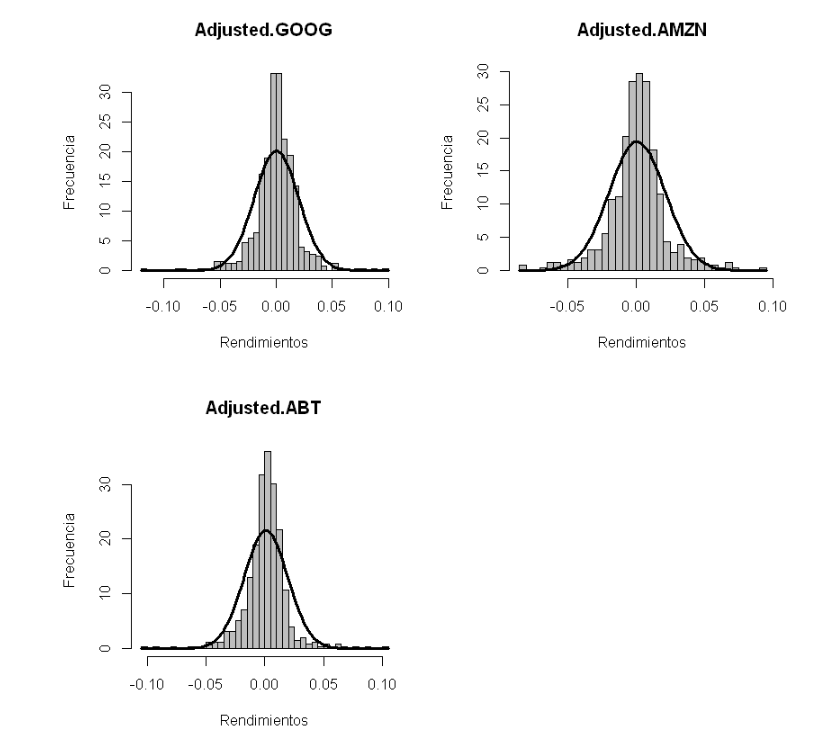

Estadística y conformación de portafolios de inversión.¶
Descargar las siguientes acciones desde el 23 de abril de 2018 hasta el 25 de abril de 2020:
Alphabet Inc. (GOOG)
Abbott Laboratories (ABT)
Amazon.com, Inc. (AMZN)
Valor de mercado del portafolio de inversión: Dos millones de dólares americanos.¶
Escriba el código en R para responder los ejercicios.
Ejercicios¶
1. Valor de mercado de cada acción.¶
Respuesta:
GOOG: 600.000 USD.
ABT: 900.000 USD.
AMZN: 500.000 USD.
2. Rendimientos esperado de cada acción.¶
Respuesta:
GOOG: 0,000358511555428326 diario.
ABT: 0,000995225760686803 diario.
AMZN: 0,000915676394826092 diario.
3. Volatilidad de cada acción.¶
Respuesta:
GOOG: 0,019775822442102 diaria.
ABT: 0,0185336879305693 diaria.
AMZN: 0,0205433225121457 diaria.
7. Gráfico: precio.¶
8. Gráfico: rendimientos de las acciones.¶
10. Gráfico: histograma de los rendimientos de las acciones y distribución normal con frecuencia diaria (\(\mu\neq 0\)).¶

4¶